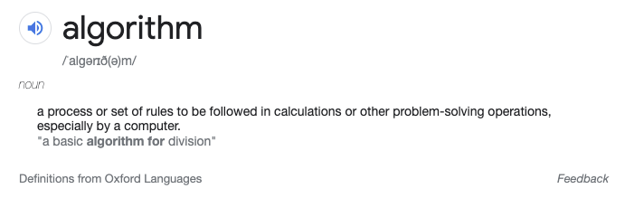

The new media bargaining code in Australia includes a requirement that Facebook and Google
provide 28 days’ notice of changes to algorithms and policies that will affect news content and advertising.
At first read, it is an almost laughable ask. It smacks of a lack of understanding about how modern tech companies operate. These “algorithms” are complex systems with many inputs that have been in constant flux for years, powered by cutting edge AI.
Putting aside the aeroplane-sized holes in this particular code, it raises an interesting question.
How could transparency requirements work for algorithms?
To explore this, we first need to agree on what algorithms actually are.

This is a good starting point but doesn’t capture the reality of what is running on Google and Facebook’s servers. There are feature-length documentaries that do a better job of this than I can.
Bascially, a mix of human and machine intelligence ruthlessly optimise what you see next on your news feed to maximise your liklihood to scroll a little longer. Each decision about what to show is based on a huge number of factors, including user demographics and past behaviour on the platform.
All that is to say that there is no single receipe or “set of steps” that can be tweaked to make a certain type of news article appear less frequently in everyone’s feed. It just isn’t that simple.
But that’s not to say that transparency isn’t achievable in a less exact form.
You could describe these systems in terms of their responses to a set of well-conceived questions that cover the full scope of their operation. Defining this set of questions is a difficult tasks, requiring deep technical capabilities as well as a big-picture perspective on achieving balance between the different stakeholders.
There could be minimum requirements for some answers to ensure some basic fairness and public interest values. Some (under-developed and flawed) examples might include:
Past results to this could then be used as a benchmark to give context to the results and judge if sufficient notice has been given for changes in them.
Some flexibility would likely be needed for the technical requirements. A transparent process involving a representative set of stakeholders should have the ability to tweak these questions and minimum requirements to ensure balance between the interests of platforms, news organisations and the public.